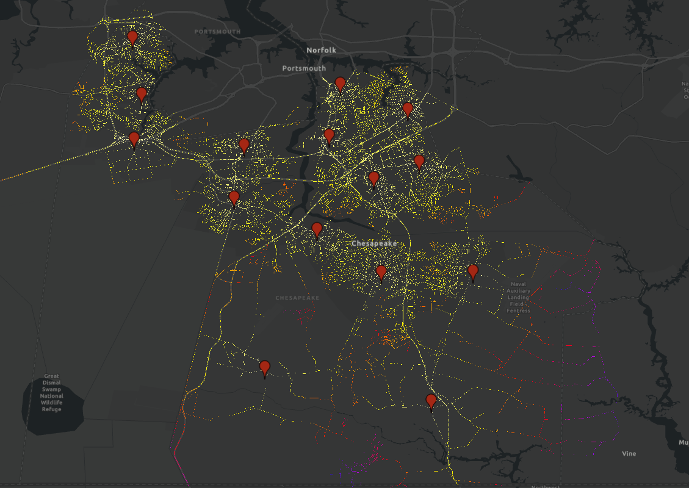
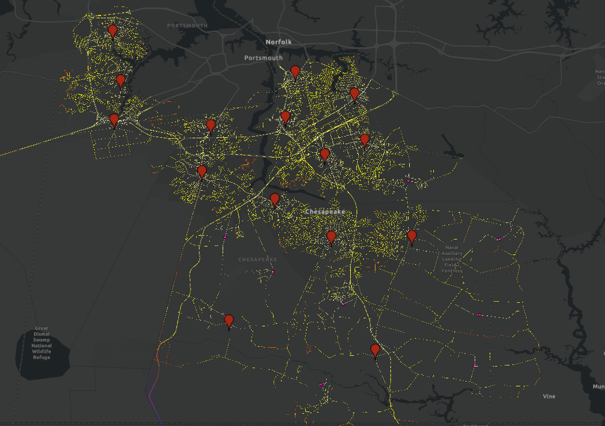

Chesapeake VA Fire Station Service Area Audit & Infrastructure Expansion
A Cost-Weighted Distance Spatial Analysis in ArcGIS Pro evaluating municipal NFPA 1710 compliance and Wildland-Urban Interface (WUI) risk.
1. Executive Summary & Key Results
This GIS audit assessed the City of Chesapeake's emergency response coverage against the National Fire Protection Association (NFPA) 1710 Standard. The baseline analysis revealed that 16.63% of the road network (56,664 cells out of 340,701) fell outside the mandatory 4-minute travel window, creating severe vulnerabilities across expanding residential fringes, agricultural zones, and critical ecological corridors like the Great Dismal Swamp.
By engineering an optimized, distributed expansion plan incorporating eight (8) new satellite fire stations, the non-compliant network area was reduced by 58.45%, driving citywide coverage to 93.09% Maximum Feasible Compliance.
2. Spatial Coverage Maps
Click any map sheet below to enlarge using the interactive lightbox preview.

Baseline System (12 Stations)16.63% non-compliant (shown in orange/red highlights) concentrating in southern rural/agricultural zones.

Proposed Expansion (20 Stations)Adds 8 satellite stations, expanding coverage to 93.09% across critical agricultural corridors.
3. Analytical Methodology & Data Transformation
Rather than using inaccurate circular buffer distances, this study applied Transportation GIS principles using ArcGIS Pro's Cost-Weighted Distance Analysis. The vector road network, complete with posted speed limits, was converted into a high-resolution 340,701-cell raster surface.
Friction Raster (Cost Surface) Mathematical Formula
To calculate exact travel time per cell traversal, a custom Friction Raster was derived using the following formula:
Topological Data Cleaning & Station Alignment
During spatial modeling, vector point data representing fire stations required manual precision adjustment to force explicit contact with roadway raster cells. Without this topological alignment step, ArcGIS Pro's Distance Accumulation tool failed to recognize station connectivity, causing artificial network disconnects.
4. Compliance Audit Metrics
| Audit Metric | Baseline (12 Stations) | Proposed (20 Stations) | Net Change |
|---|---|---|---|
| Compliant Coverage (≤ 4 Min) | 83.33% | 93.09% | +9.76% (+58.45% gap reduction) |
| Unserved Network (> 4 Min) | 16.63% | 6.91% | -9.72pp |
| Minor Delay Window (5–7 Min) | 12.03% | 6.49% | -5.54pp |
5. Engineering Assumptions & Professional Caveats
To maintain professional rigor, the model establishes a conservative benchmark based on baseline ideal travel conditions. The analysis balances two opposing operational realities:
- Model Limitation (Conservative Baseline): The raster model assumes travel at posted speed limits without accounting for real-time congestion, severe weather, or turnout delays. During peak hours or inclement weather, actual 4-minute compliance boundaries temporarily contract.
- Operational Mitigator (Real-World Safety Cushion): Under Virginia emergency protocols, response units are legally authorized to exceed posted limits by up to 10 mph during clear-traffic dispatch. This operational allowance effectively captures the remaining 6.91% gap (which falls within the 5-minute threshold) under real-world conditions.
- Land Use & Economic Constraints: Achieving 100% compliance is cost-prohibitive due to lack of developable municipal land in built-up areas and long, non-residential highway corridors where wildfire/agricultural risk is minimal—validating 93% as Maximum Feasible Compliance.